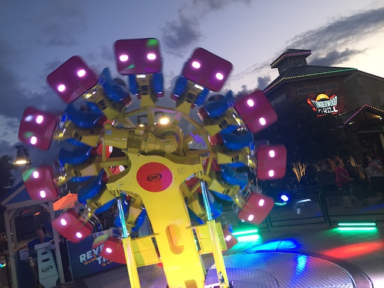
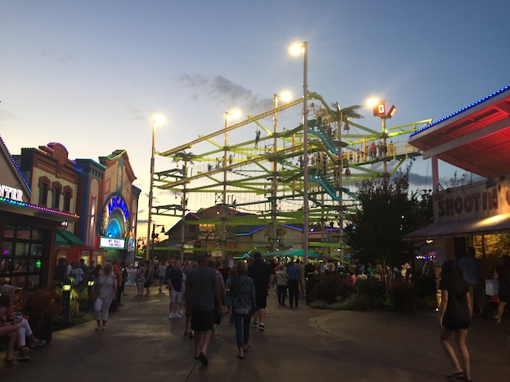

| |
Island in Pigeon Forge Review

The Island in Pigeon Forge is NOT a theme park. I mean....why would it be? Dollywood is in the exact same town. However, this place is worth mentioning. Not only because of what it is today. It's an outdoor shopping center, with a couple rides, including one of those rides being a kiddy coaster that caused us to venture out and whore this place out. But it also has a history of rides. In fact, this place used to have a freaking wooden coaster at one point! It was fairly small, a mini woodie. But still! A legit wooden coaster, and not a kiddy coaster! At a freaking mall! That is impressive. Now, this ride, Thunder Eagle, did not last very long. In fact, it ran for just one year before becoming SBNO, and eventually closing. The official reason given for the rides incredibly short lifespan was that Race World (what the park was apparently called back then) had very few people visit it (Probably because Dollywood is in the same town). So Thunder Eagle was then left to rot before some small little Canadian Park that wanted to be a real theme park tried to buy it. However, the local government kept refusing them the permits to build the coaster, and eventually, they couldn't afford to keep it. The wood got used for scrap, and the trains wound up on the Zippin Pippin in Wisconson. That is an incredibly sad story of one of the rarest coaster credits in the world. Even if Dollywood is right there, opened up a kickass wooden coaster a couple years after it closed, and then opened a 2nd wooden coaster 14 years later, that would be one of the best wooden coasters ever! Anyway, Race World underwent a renovation, and....it became the outdoor mall and shopping center that it is today. Sure, it has a couple rides. But keep it real. You visit this place in the same way that you would visit your local mall. Honestly, I feel like this place is more for locals than tourists. Then again, everything is for tourists in Pigeon Forge. The entire town is a giant tacky redneck tourist trap (but I still really like it nonetheless). Know it's weird for me to review a mall. But....it's custom that I review everything.
Rollercoasters
There is a link to a review of all the Rollercoasters at Island in Pigeon Forge.
Kiddy Coasters
Spinning Parrot Review

Flat Rides
Here are all the Flat Rides at the Island in Pigeon Forge. And....despite being an outdoor mall, there's actually a couple other rides here. First off, let's go with the only non-kiddy flat ride. Reverse Time. I never rode this, or any model of this. But from what I can tell, this looks like a modern version of one of those Wipeout rides. Which...those are a lot of fun. So I imagine that I'd have a lot of fun on this one too. Aside from that, we have the classics. A giant ferris wheel, which....those just feel like standard landmark stand alone attractions. Ranging from the London Eye, to the one in Las Vegas, to....I think Orlando has its own. And I don't wanna google giant ferris wheels in major cities right now. They have a carousel, since....again. Classic stand alone attraction. And then we have the kiddy flat rides. Kiddy Screamin Swing, Truck Ride, kiddy drop tower, etc. Nothing special, but at the same time. This is a mall. That's in the same town as one of America's most popular theme parks. I'm amazed it has as much as it does.

I'll have to ride one of these at a real theme park sometime.
Water Rides
There are no water rides at the Island in Pigeon Forge.
Dining
All right. Now let's talk about the food. And....since this is essentially a giant outdoor mall or shopping center, there's gonna be A LOT to choose from in the dining category. For us, we decided to eat at Paula Deen's Resteraunt. Now apparently, this is a chain. Not a big chain, with only a few resteraunt locations, but there are multiple copies of it. It's also located in Branson, MO (Yet another way that it and Pigeon Forge are sister cities), Nashville, TN, Myrtle Beach, SC, and Foley, AL. So it's not the most unique thing there is. But I never ate there, and.....I really liked it. A LOT!!! Paula Deen isn't exactly known for her healthy cooking. And....the food may be unhealthy as f*ck, and Paula Deen may be racist, but GOD DAMN IT!!! HER COOKING IS REALLY GOOD!!! So many good fried Southern foods, and....yeah. Butter really does make things taste so damn good *drool*. also have a Margaritaville Resteraunt, which....aside from Margaritas (Enjoy you drunks), sells burgers, and damn near everything. There's also the Timberwood Grill, which seems to be standard American food. And then you have pretty much everything else. Auntie Anne's Pretzals, Cookie Store, Cinnabon, Frozen Yogurt, Popcorn, Pizza, Candy Store, Ice Cream, Fudge, and of course, a bar and a brewery for all you drunks. So yeah. You've got a lot of dining options to choose from here.
 "You do know that that food is as unhealthy as a cigarette and supports a racist?" "Yeah. But it tastes SO GOOD!!!"
"You do know that that food is as unhealthy as a cigarette and supports a racist?" "Yeah. But it tastes SO GOOD!!!"
Theming and Other Attractions
Here are the reviews of all the other stuff at the Island in Pigeon Forge. Well....this place is an outdoor shopping center. There is NO theming here whatsoever. Moving on. Now as far as other things to do, yeah. There's A LOT to do here. As said, this is an outdoor shopping center. So...naturally, shopping is probably the biggest thing to do here. But on top of that, we have lots of other fun things to do here. First off, there's some sort of Escape Game. From what I can tell, it's like a mock game where you pretend to be in prison and have to break out. That....actually sounds like a lot of fun. I know it's expensive, but damn it! That actually sounds like fun. Hope to find something similar to that around me. They have a sort of shooting game. Of course they do. Because this is Tennessee, and the place attracts rednecks like crazy. So naturally....people here love their guns. Makes perfect sense that this is here. They also have Bungee Trampolines, laser tag, a ropes course that may not look amazing, but I'm sure is still fun, a mirror maze, panning for gold, along with lots of other things.

Not the best ropes course, but still fun.
In Conclusion
The Island in Pigeon Forge is surprisingly, A LOT of fun. Yeah, from a coaster enthusiast prespective, this place has nothing. Literally just an SBF Spinner. A place you can get in and out of in 10 minutes. But if you put the credit whoring aside and judge this place for what it is, an outdoor shopping center, than it's a lot of fun. It seems to have a decent amount of dining and a lot of great places to choose from for dinner. There's a lot of shopping you can do here. But on top of that, it just has a lot of fun activities. Ranging from the Escape Rooms, Shooting Ranges, Mirror Mazes, and all sorts of fun stuff. It's just a fun place to spend some time. Yeah, if you're a hardcore credit whore, you'll be in and out. But...I'm glad I stuck around for dinner after my whoring (Spontaneous plans! YAY!!!). I certainly won't come back for the credit (unless they decide they want to resurect Thunder Eagle, or add in another coaster, which considering Dollywood, they probably won't). But I very well may just come back again for Paula Deen's food and to try that Escape Room.
Enthusiast FAQs.
*Are there kiddy coaster restrictions? - If you couldn't ride the kiddy coaster here, I would not be reviewing the place.

Tips
*Try to not look so ashamed doing your credit whoring.
*Try some of the food here. They have some really good resteraunts and options here.
*Have Fun!!!
Theme Park Category:
Credit Whoring
Location
Pigeon Forge, Tennessee, USA
Last Day Visited
July 23, 2019
Video
There will NEVER be an Island at Pigeon Forge Video.
Complete Update List
2019
Mid-Atlantic Trip 2019
Here's a link to the parks website.
Home
|